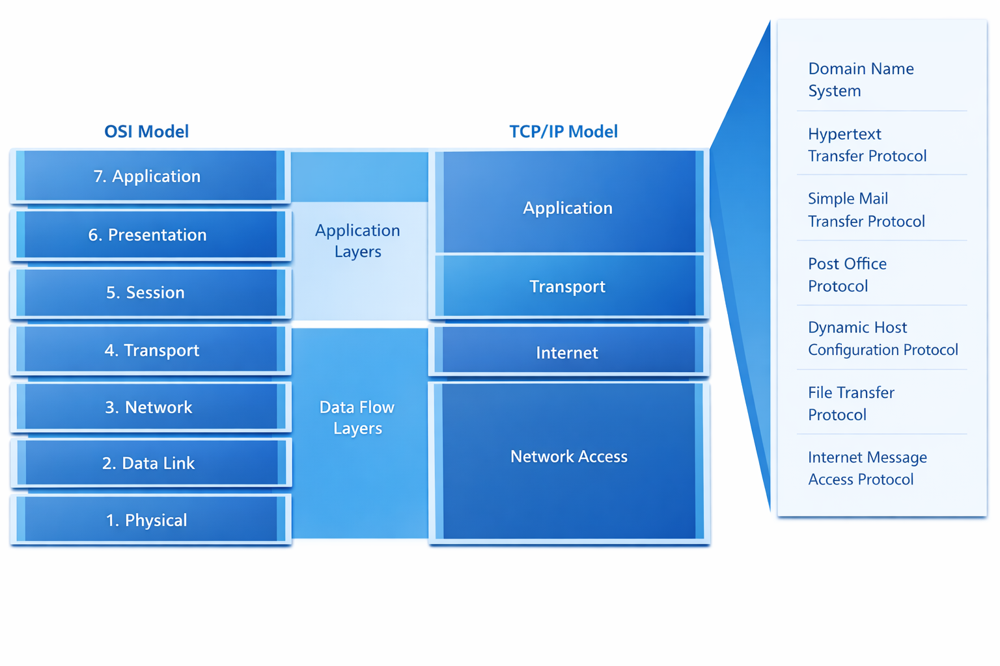
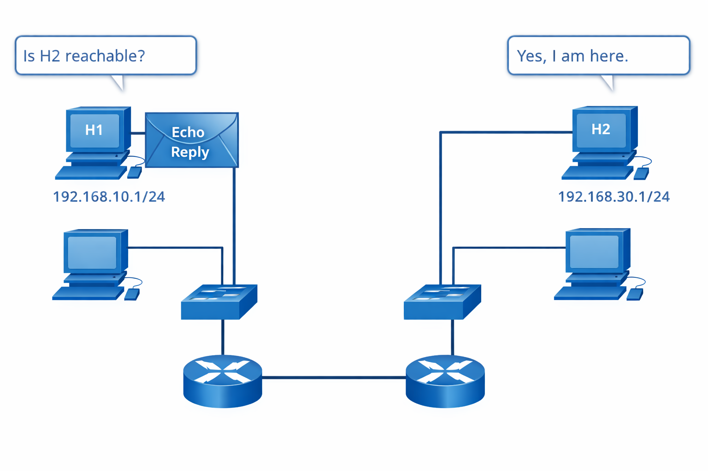
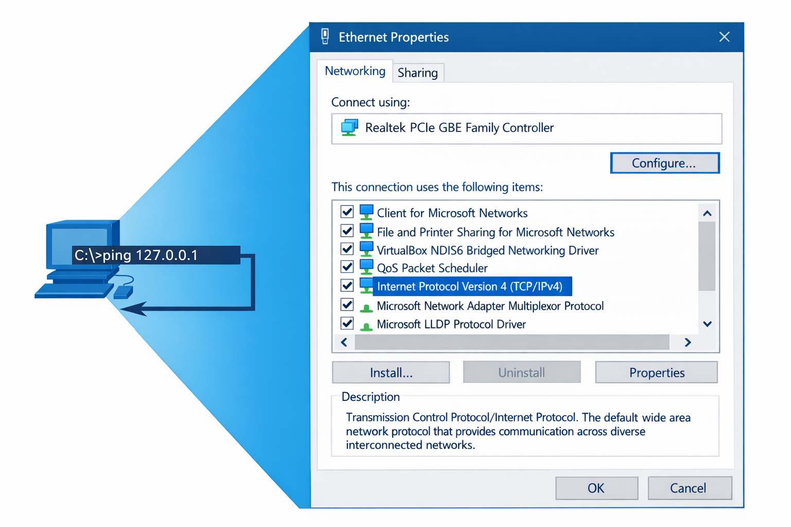
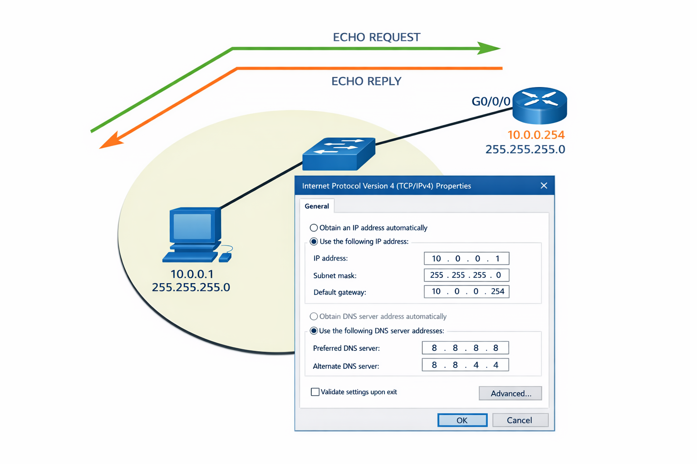
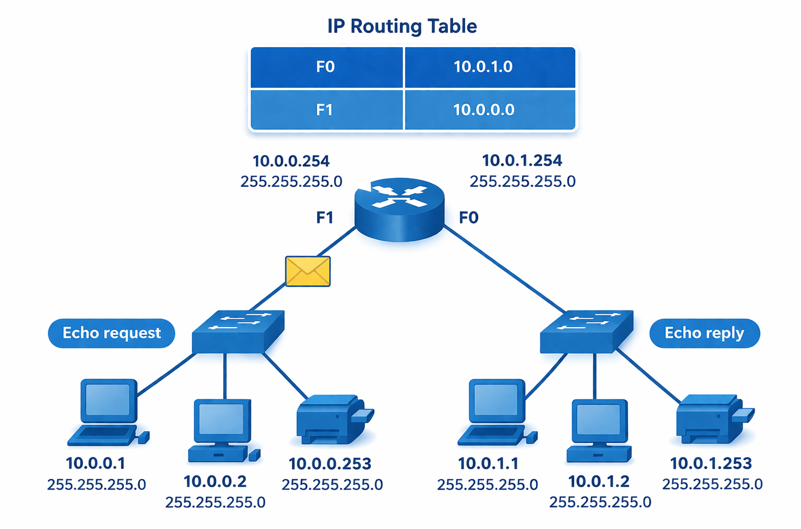
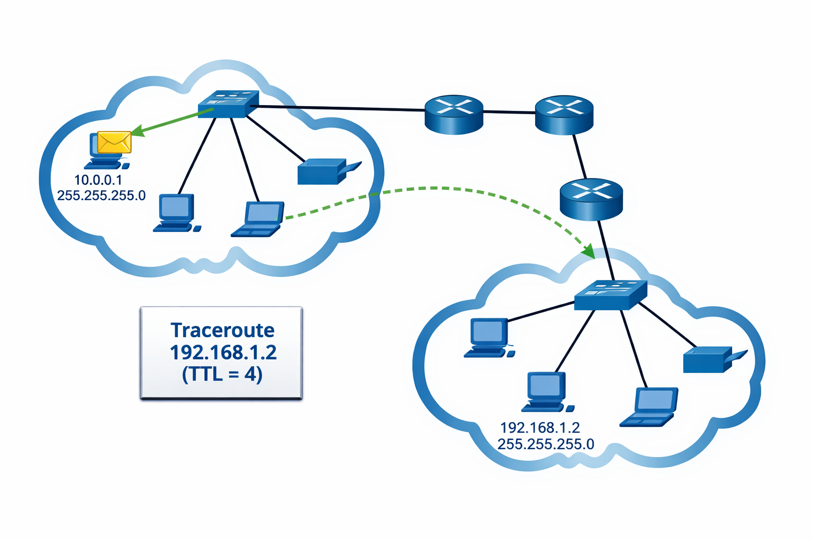

Anis Ghaieb
baniss2002@gmail.com


Cette leçon présente le rôle de la couche application, les principaux protocoles utilisés par les services réseau, puis les outils de diagnostic associés aux messages ICMP, notamment ping et traceroute.
La couche application correspond à la 7e couche du modèle OSI. C’est la couche la plus proche de l’utilisateur, car elle sert d’interface entre les logiciels utilisés au quotidien et les services du réseau.
Concrètement, lorsqu’une personne ouvre un site web, envoie un courriel, télécharge un fichier ou demande la résolution d’un nom de domaine, elle utilise un service qui s’appuie sur un ou plusieurs protocoles liés à cette couche.
Dans le modèle TCP/IP, plusieurs fonctions associées à la couche application du modèle OSI sont regroupées dans une couche applicative plus large. Cette comparaison aide à comprendre comment les mêmes échanges réseau peuvent être décrits avec deux modèles différents.

Un protocole réseau est un ensemble de règles qui précise comment deux appareils communiquent. Grâce aux protocoles, des équipements différents peuvent parler le même langage, structurer les messages, corriger certaines erreurs et organiser les échanges.
Les protocoles ont plusieurs objectifs : faciliter la communication, garantir l’interopérabilité, améliorer la fiabilité et soutenir de bonnes performances sur le réseau.
| Protocole | Rôle principal | Exemple d’usage |
|---|---|---|
| HTTP / HTTPS | Accès aux pages web ; HTTPS ajoute le chiffrement. | Consulter un site web. |
| DNS | Traduire un nom de domaine en adresse IP. | Retrouver l’adresse d’un serveur à partir de son nom. |
| SMTP / IMAP / POP | Envoyer et récupérer des courriels. | Utiliser une messagerie électronique. |
| DHCP | Attribuer automatiquement une configuration IP. | Connecter un poste à un réseau local. |
| FTP | Transférer des fichiers entre un client et un serveur. | Téléverser ou télécharger un fichier. |
| P2P | Permettre à plusieurs postes d’échanger sans serveur central unique. | Partager des fichiers entre pairs. |
HTTP est le protocole utilisé pour accéder aux sites web. Il fonctionne selon une logique client-serveur : le navigateur envoie une requête, puis le serveur répond avec la ressource demandée.
HTTPS est la version sécurisée d’HTTP. Le contenu échangé est chiffré, ce qui protège mieux les données pendant leur transmission.
Exemple simple : le navigateur demande une page, le serveur envoie la page, puis le navigateur l’affiche.
DNS signifie Domain Name System. Son rôle est de convertir un nom facile à lire par une personne en une adresse IP compréhensible par les machines.
Exemple : au lieu de mémoriser une adresse IP, l’utilisateur écrit un nom de domaine dans son navigateur. Le serveur DNS trouve l’adresse correspondante et permet d’atteindre le bon serveur.
SMTP sert à envoyer les courriels. IMAP permet de consulter les messages directement sur le serveur, tandis que POP sert plutôt à les télécharger pour une consultation locale.
En pratique, un message est envoyé via SMTP, transmis entre serveurs, puis récupéré par le destinataire avec IMAP ou POP.
DHCP attribue automatiquement une configuration IP à un appareil qui arrive sur le réseau. Cela évite de saisir manuellement une adresse IP sur chaque poste.
Le principe est simple : le client demande une adresse, le serveur propose une valeur libre, puis le client accepte cette configuration.
FTP est utilisé pour transférer des fichiers entre un client et un serveur. Les applications P2P, elles, permettent à plusieurs appareils de partager directement des ressources, chaque poste pouvant jouer le rôle de client et de serveur.
Le protocole ICMP est utilisé pour le contrôle et le diagnostic du réseau. Il ne sert pas à transporter les données d’un utilisateur, mais à informer sur l’état de la communication.
Il permet par exemple de savoir si une destination est joignable, si un paquet a expiré en chemin ou si une meilleure route peut être proposée.
Quand un étudiant apprend à dépanner un réseau, ICMP est souvent le premier outil pratique à comprendre, car il sert de base aux tests les plus simples.

La commande ping envoie une demande d’écho à une autre machine et attend une réponse. Si une réponse revient, la communication fonctionne au moins jusqu’au niveau testé.
Un ping réussi indique qu’un chemin de communication existe. Un échec peut signaler un problème d’adresse IP, de câblage, de configuration, de routage ou parfois un blocage de sécurité sur les messages ICMP.
Le loopback correspond à l’adresse interne d’un appareil : 127.0.0.1 en IPv4 et ::1 en IPv6. Ce test ne sort pas réellement sur le réseau ; il vérifie d’abord si la pile IP locale fonctionne correctement.
Si ce test échoue, le problème se situe sur la machine elle-même. S’il réussit, cela confirme que la configuration IP de base est active.
ping 127.0.0.1

Test réussi - Réponse reçue de 127.0.0.1 - Conclusion : la pile IP locale fonctionne
La passerelle par défaut est généralement l’interface du routeur qui relie le réseau local au reste du réseau. Faire un ping vers cette adresse permet de vérifier que le poste communique correctement avec son routeur.
Si le poste a l’adresse 10.0.0.1 avec le masque 255.255.255.0 et que la passerelle est 10.0.0.254, un ping vers la passerelle valide le fonctionnement du réseau local et la cohérence de la configuration IPv4.
ping 10.0.0.254

Le ping peut aussi être utilisé entre deux réseaux différents. Dans ce cas, la réussite du test confirme que les routeurs et les routes intermédiaires permettent bien le passage des messages entre les deux sous-réseaux.
Si le test échoue, il faut vérifier la table de routage, les adresses des interfaces, la passerelle du poste source et les éventuels filtres de sécurité appliqués aux messages ICMP.
ping 10.0.1.1

La commande traceroute sous Linux ou tracert sous Windows montre le chemin suivi par les données entre une source et une destination. Elle affiche les routeurs rencontrés un par un.
Cette commande utilise un compteur appelé TTL (Time To Live). Chaque fois qu’un paquet traverse un routeur, le TTL diminue. Lorsqu’il atteint zéro, le routeur renvoie un message ICMP de type Time Exceeded. C’est ce mécanisme qui permet de révéler les différents sauts du trajet.
Traceroute est utile pour localiser une panne ou repérer le point où un paquet cesse d’avancer. Il aide donc à comprendre si le problème se situe près de la source, au milieu du trajet ou près de la destination.
tracert 192.168.1.2
traceroute 192.168.1.2

Lecture attendue - Saut 1 : réseau local ou passerelle - Sauts suivants : routeurs intermédiaires - Dernier saut : destination atteinte ou point de blocage
Utilise la touche Tab pour parcourir les choix puis valide avec le bouton final.
Réponds aux 10 questions ci-dessous, puis valide l’ensemble avec le bouton final. La réussite est obtenue à partir de 6 bonnes réponses sur 10.